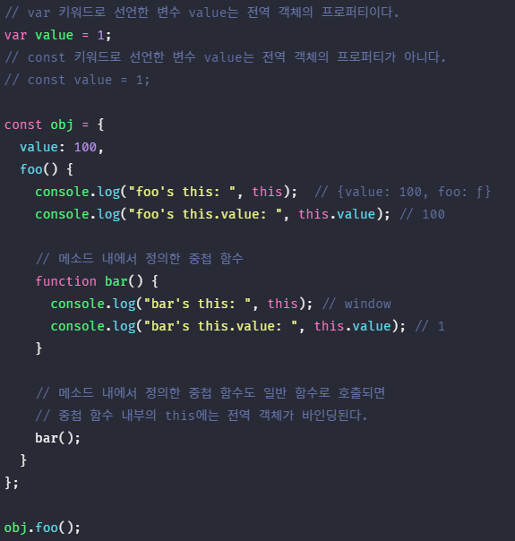

1. 일급 객체 #
객체는 상태(state)를 나타내는 프로퍼티와 동작(behavior)을 나타내는 메소드를 하나의 논리적인 단위로 묶은 복합적인 자료 구조이다.
동작을 나타내는 메소드는 자신이 속한 객체의 상태, 즉 프로퍼티를 참조하고 변경할 수 있어야 한다. 이때 메소드가 자신이 속한 객체의 프로퍼티를 참조하려면 먼저 자신이 속한 객체를 가리키는 식별자를 참조할 수 있어야 한다.
객체 리터럴 방식으로 생성한 객체의 경우, 메소드 내부에서 메소드 자신이 속한 객체를 가리키는 식별자를 재귀적으로 참조할 수 있다.
getDiameter 메소드 내에서 메소드 자신이 속한 객체를 가리키는 식별자 circle을 참조하고 있다. 이 참조 표현식이 평가되는 시점은 getDiameter 메소드가 호출되어 함수 몸체가 실행되는 시점이다.
객체 리터럴은 할당 단계에 평가된다. 따라서 getDiameter 메소드가 호출되는 시점에는 이미 객체 리터럴의 평가가 완료되어 객체가 생성되었고 식별자 circle에 생성된 객체가 할당된 이후이다. 따라서 메소드 내부에서 식별자 circle을 참조할 수 있다.
하지만 자기 자신이 속한 객체를 재귀적으로 참조하는 방식은 일반적이지 않으며 바람직하지도 않다. 생성자 함수 방식으로 인스턴스를 생성하는 경우를 생각해보자.
생성자 함수 내부에서는 프로퍼티 또는 메소드를 추가하기 위해 자신이 생성할 인스턴스를 참조할 수 있어야 한다. 하지만 생성자 함수에 의한 객체 생성 방식은 먼저 생성자 함수를 정의한 이후, new 연산자와 함께 생성자 함수를 호출하는 단계가 추가로 필요하다. 다시 말해, 생성자 함수로 인스턴스를 생성하려면 먼저 생성자 함수가 존재해야 한다.
따라서 생성자 함수를 정의하는 시점에는 아직 인스턴스를 생성하기 이전이므로 생성자 함수가 생성할 인스턴스를 가리키는 식별자를 알 수 없다. 따라서 자신이 속한 객체 또는 자신이 생성할 인스턴스를 가리키는 특수한 식별자가 필요하다. 이를 위해 자바스크립트는 this라는 특수한 식별자를 제공한다.
this는 자신이 속한 객체 또는 자신이 생성할 인스턴스를 가리키는 자기 참조 변수이다. this를 통해 자신이 속한 객체 또는 자신이 생성할 인스턴스의 프로퍼티나 메소드를 참조할 수 있다.
this는 자바스크립트 엔진에 의해 암묵적으로 생성되며 코드 어디에서든지 참조할 수 있다. 함수를 호출하면 arguments 객체와 this가 암묵적으로 함수 내부에 전달된다. 함수 내부에서 arguments 객체를 지역 변수처럼 사용할 수 있는 것처럼 this도 지역 변수처럼 사용할 수 있다. 단, this가 가리키는 값, 즉 this 바인딩은 함수 호출 방식에 의해 동적으로 결정된다.
- 바인딩
- 바인딩이란 식별자와 값을 연결하는 과정을 의미한다. 예를 들어 변수는 할당에 의해 값이 바인딩된다.
위에서 살펴본 객체 리터럴과 생성자 함수의 예제를 this를 사용하여 수정해 보자.
객체 리터럴의 메소드 내부에서의 this는 메소드를 호출한 객체, 즉 circle을 가리킨다.
생성자 함수 내부의 this는 생성자 함수가 생성할 인스턴스를 가리킨다. 이처럼 this는 상황에 따라 가리키는 대상이 다르다.
Java, C++와 같은 클래스 기반 언어에서 this는 언제나 클래스가 생성하는 인스턴스를 가리킨다. 하지만 자바스크립트의 this는 함수가 호출되는 방식에 따라 this에 바인딩될 값, 즉 this 바인딩이 동적으로 결정된다. 또한 엄격 모드 역시 this 바인딩에 영향을 준다.
this는 코드 어디든지 참조가능하다. 전역에서도 함수 내부에서도 참조할 수 있다.
하지만 this는 객체의 프로퍼티나 메소드를 참조하기 위한 자기 참조 변수이므로 일반적으로 객체의 메소드 내부 또는 생성자 함수 내부에서만 의미가 있다. 따라서 strict mode가 적용된 일반 함수 내부의 this에는 undefined가 바인딩된다. 일반 함수 내부에서 this를 사용할 필요가 없기 때문이다.
2. 함수 호출 방식과 this 바인딩 #
this가 가리키는 값, 즉 this 바인딩은 함수의 호출 방식, 즉 함수가 어떻게 호출되었는지에 따라 동적으로 결정된다.
- 렉시컬 스코프와 this 바인딩은 결정 시기가 다르다.
- 함수의 상위 스코프를 결정하는 방식인 렉시컬 스코프는 함수 정의가 평가되어 함수 객체가 생성되는 시점에 상위 스코프를 결정한다. this에 바인딩될 객체는 함수 호출 시점에 결정된다.
함수를 호출하는 방식은 아래와 같이 다양하다.
- 일반 함수 호출
- 메소드 호출
- 생성자 함수 호출
- Function.prototype.apply/call/bind 메소드에 의한 간접 호출
주의할 것은 동일한 함수도 다양한 방식으로 호출할 수 있다는 것이다. 아래 예제를 살펴보자.
다양한 함수의 호출 방식에 따라 어떻게 this에 바인딩될 객체가 결정되는지 알아보자.
2.1. 일반 함수 호출 #
기본적으로 this에는 전역 객체가 바인딩된다.
위 예제처럼 전역 함수는 물론이고 중첩 함수를 일반 함수로 호출하면 함수 내부의 this에는 전역 객체가 바인딩된다. 다만, this는 객체의 프로퍼티나 메소드를 참조하기 위한 자기 참조 변수이므로 객체를 생성하지 않는 일반 함수에서 this는 의미가 없다. 따라서 아래 예제처럼 strict mode가 적용된 일반 함수 내부의 this에는 undefined가 바인딩된다.
메소드 내에서 정의한 중첩 함수도 일반 함수로 호출되면 중첩 함수 내부의 this에는 전역 객체가 바인딩된다.

콜백 함수 내부의 this에도 전역 객체가 바인딩된다. 어떠한 함수라도 일반 함수로 호출되면 this에 전역 객체가 바인딩된다.
- setTimeout 함수
- setTimeout 함수는 두번째 매개변수에 전달한 시간(ms)만큼 대기한 다음, 첫번째 매개변수에 전달한 콜백 함수를 호출하는 타이머 함수이다. 위 예제의 경우, 100ms을 대기한 다음, 콜백 함수를 호출한다.
이처럼 일반 함수로 호출된 모든 함수(중첩 함수, 콜백 함수 포함) 내부의 this에는 전역 객체가 바인딩된다.
하지만 메소드 내에서 정의한 중첩 함수 또는 메소드에게 전달한 콜백 함수(보조 함수)의 this가 전역 객체를 바인딩하는 것은 문제가 있다. 중첩 함수 또는 콜백 함수(보조 함수)는 외부 함수를 돕는 헬퍼 함수로서 역할하므로 외부 함수의 일부 로직을 대신하는 경우가 대부분이다. 하지만 외부 함수인 메소드와 중첩 함수의 this가 일치하지 않는다는 것은 중첩 함수 또는 콜백 함수(보조 함수)를 헬퍼 함수로 동작하기 어렵게 만든다.
위 예제의 경우, 메소드 내부에서 setTimeout 함수에 전달된 콜백 함수의 this에는 전역 객체가 바인딩된다. 따라서 this.value는 객체 obj의 value 프로퍼티가 아닌 전역 객체의 value 프로퍼티, 즉 window. value를 참조한다. var 키워드로 선언한 전역 변수는 전역 객체의 프로퍼티가 되므로 window. value은 1이다.
메소드 내부의 중첩 함수나 콜백 함수의 this 바인딩을 메소드의 this 바인딩과 일치시키기 위한 방법은 아래와 같다.
위 방법 이외에도 자바스크립트는 this를 명시적으로 바인딩할 수 있는 Function.prototype.apply, Function.prototype.call, Function.prototype.bind 메소드를 제공한다.
2.2. 메소드 호출 #
메소드 내부의 this는 메소드를 호출한 객체, 즉 메소드 이름 앞의 마침표(.) 연산자 앞에 기술한 객체에 바인딩된다.
주의할 것은 메소드 내부의 this는 메소드를 소유한 객체가 아닌 메소드를 호출한 객체에 바인딩된다는 것이다. 아래 예제를 살펴보자.
위 예제의 getName 메소드는 person 객체의 메소드로 정의되었다. 메소드는 프로퍼티에 바인딩된 함수이다. 즉, person 객체와 getName 프로퍼티가 가리키는 함수 객체는 별도의 객체이다. getName 프로퍼티가 생성된 함수 객체를 가리키고 있을 뿐이다.

따라서 getName 프로퍼티가 가리키는 함수 객체, 즉 getName 메소드는 다른 객체의 프로퍼티에 할당하는 것으로 다른 객체의 메소드가 될 수도 있고 일반 변수에 할당하여 일반 함수로 호출될 수도 있다.
따라서 메소드 내부의 this는 메소드를 소유한 객체와는 관계가 없고 메소드를 호출한 객체에 바인딩된다.

프로토타입 메소드 내부에서 사용된 this도 일반 메소드와 마찬가지로 해당 메소드를 호출한 객체에 바인딩된다.
①의 경우, getName 메소드를 호출한 객체는 me이다. 따라서 getName 메소드 내부의 this는 me를 가리키며 this.name은 ‘Lee’이다.
②의 경우, getName 메소드를 호출한 객체는 Person.prototype이다. Person.prototype도 객체이므로 직접 메소드를 호출할 수 있다. 따라서 getName 메소드 내부의 this는 Person.prototype를 가리키며 this.name은 ‘Kim’이다.

2.3. 생성자 함수 호출 #
생성자 함수 내부의 this에는 생성자 함수가 (미래에) 생성할 인스턴스가 바인딩된다.
생성자 함수는 이름 그대로 객체(인스턴스)를 생성하는 함수이다. 일반 함수와 동일한 방법으로 생성자 함수를 정의하고 new 연산자와 함께 호출하면 해당 함수는 생성자 함수로 동작한다. 만약 new 연산자와 함께 생성자 함수를 호출하지 않으면 생성자 함수가 아니라 일반 함수로 동작한다.
2.4. Function.prototype.apply/call/bind 메소드에 의한 간접 호출 #
Function.prototype.apply, Function.prototype.call 메소드는 인수로 this와 인수 리스트를 전달받아 함수를 호출한다. apply와 call 메소드는 Function.prototype의 메소드이다. 즉, apply와 call 메소드는 Function 생성자 함수를 constructor 프로퍼티로 가리키는 모든 함수가 상속받아 사용할 수 있다.

apply와 call 메소드의 사용 방법은 아래와 같다.
apply와 call 메소드의 본질적인 기능은 함수를 호출하는 것이다. apply와 call 메소드는 함수를 호출하면서 첫번째 인수로 전달한 특정 객체를 호출한 함수의 this에 바인딩한다.
apply와 call 메소드는 호출할 함수에 인수를 전달하는 방식만 다를 뿐 동일하게 동작한다. 위 예제는 호출할 함수, 즉 getThisBinding 함수에 인수를 전달하지 않는다. apply와 call 메소드를 통해 getThisBinding 함수를 호출하면서 인수를 전달해 보자.
apply 메소드는 호출할 함수의 인수를 배열로 묶어 전달한다. call 메소드는 호출할 함수의 인수를 쉼표로 구분한 리스트 형식으로 전달한다. 이처럼 apply와 call 메소드는 호출할 함수에 인수를 전달하는 방식만 다를 뿐 this로 사용할 객체를 전달하면서 함수를 호출하는 것은 동일하다.
apply와 call 메소드의 대표적인 용도는 arguments 객체와 같은 유사 배열 객체에 배열 메소드를 사용하는 경우이다. arguments 객체는 배열이 아니기 때문에 Array.prototype.slice와 같은 배열의 메소드를 사용할 수 없으나 apply와 call 메소드를 이용하면 가능하다.
Function.prototype.bind 메소드는 apply와 call 메소드와는 달리 함수를 호출하지 않고 this로 사용할 객체만을 전달한다.
bind 메소드는 메소드의 this와 메소드 내부의 중첩 함수 또는 콜백 함수의 this가 불일치하는 문제를 해결하기 위해 유용하게 사용된다. 아래 예제를 살펴보자.
콜백 함수 foo가 호출되기 이전인 ①의 시점에서 this는 doSomething 메소드를 호출한 객체, 즉 person 객체를 가리킨다. 그러나 콜백 함수 foo가 일반 함수로서 호출된 ②의 시점에서 this는 전역 객체 window를 가리킨다. 따라서 foo 함수 내부에서 참조한 this.name은 window.name과 같다.
이때 위 예제에서 콜백 함수 foo는 외부 함수 doSomething를 돕는 헬퍼 함수(보조 함수)의 역할을 하기 때문에 외부 함수 doSomething 내부의 this와 콜백 함수 내부의 this가 상이하면 문맥상 문제가 발생한다.
따라서 콜백 함수 내부의 this를 콜백 함수를 호출하는 외부 함수 내부의 this와 일치시켜 주어야 한다. 이때 bind 메소드를 사용하여 this를 일치시킬 수 있다. 물론 apply와 call 메소드를 사용할 수도 있다.
지금까지 함수 호출 방식에 따라 this 바인딩이 동적으로 결정되는 것에 대해 살펴보았다. 이를 정리해 보면 아래와 같다.
| 함수 호출 방식 | this 바인딩 |
|---|---|
| 일반 함수 호출 | 전역 객체 |
| 메서드 호출 | 메소드를 호출한 객체 |
| 생성자 함수 호출 | 생성자 함수가 (미래에) 생성할 인스턴스 |
| Function.prototype.apply/call/bind 메소드에 의한 간접 호출 | Function.prototype.apply/call/bind 메소드에 인자로 전달한 객체 |